Chapter 3-2：Tomasulo 算法、分支预测与猜测执行¶
约 2973 个字 11 行代码 12 张图片 预计阅读时间 10 分钟
目录
- ILP
- 硬件方法
- 动态调度
- Tomasulo 算法
- 带有显式寄存器重命名的 Scoreboard 算法
- 分支预测
- 基于硬件的猜测执行（Speculation）
- 动态调度
- 硬件方法
1. 动态调度¶
1.1 Tomasulo 算法：目的¶
举个例子：
在只有一个除法单元的 Scoreboard 处理器中，第二条指令由于结构冲突需要等待第一条指令完成才能发射。
- 而第三条指令与前面两条没有任何数据依赖，能否提前执行？
1.2 Tomasulo 算法：思想¶
- Scoreboard 算法的控制权全部在 Scoreboard 的三张表中
- Tomasulo 算法将 FU 的控制权交给 FU 自己，每个 FU 有自己的指令缓存
来自姜晓红老师的形象比喻：
在一个银行中有多个办事窗口，包含个人业务窗口、对公业务窗口、外币兑换窗口等。
Scoreboard 算法就好比银行只排一条长队。第一个人在某窗口办理业务，如果第二个人也要办理同样的业务，就必须等第一个人办完才能去下一个窗口。这时，即使第三个人办理的业务与前两个人没有任何关系，也必须等前两个人都办完才能去下一个窗口。
而 Tomasulo 算法就好比银行为不同的窗口排了不同的队伍。第一个人办理个人业务，第二个人办理对公业务，第三个人办理外币兑换业务。这样即使第一个人办理的业务需要很长时间，剩余的人也可以在其他窗口办理自己的业务。
1.3 Tomasulo 算法：硬件设计¶
- 每个 FU 有一个 buffer，叫做保留站（reservation station）
busy：FU 是否空闲；op：FU 正在执行什么操作Vj,Vk：两个源寄存器对应的寄存器值（注意是值）Qj,Qk：两个源寄存器如果没准备好，应该从哪个 FU 读取- 此外还会记录 FU 距离完成执行这条指令的剩余周期数
- 内存也有自己的保留站，叫做 Load/Store Buffer
busy：这个位置是否有内存读写请求address：读写的地址
- 有一个 Register Status Table，和 Scoreboard 算法中的一样
- 有一个 Common Data Bus（CDB），负责将结果广播到所有的保留站和寄存器
把流水线划分为四个阶段：
- IF：取指令
- IS：发射指令。这一阶段负责解码指令、监视结构冲突、读操作数、重命名寄存器
- EX：送到不同的 FU 执行
- WB：写回结果（写回到 CDB，广播到所有的保留站和寄存器）
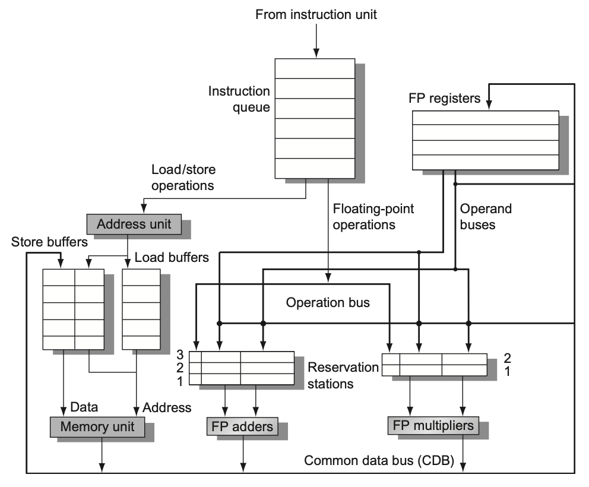
1.4 Tomasulo 算法：总结¶
优点：
- 分布式冲突检测
- 不同的 FU 有自己的保留站，提升了并行度
- 解决了 WAR 与 WAW 冲突
- 隐式的（Implicit）寄存器重命名
- 想一想为什么？
- 能够在循环中多次迭代中重叠
- 想一想为什么？
缺点：
- 需要解决同一时间发射多条指令、同一时间多个值写入 CDB 的问题
- 无法实现精确中断
1.5 Scoreboard 算法：寄存器重命名¶
将 R3 重命名为 R10 以解决 WAW 冲突：
ADD R3, R1, R2 --> ADD R3, R1, R2
ADD R5, R3, R4 --> ADD R5, R3, R4
AND R3, R6, R7 --> AND R10, R6, R7
ADD R9, R3, R8 --> ADD R9, R10, R8
将 R3 重命名为 R10 以解决 WAR 冲突：
如此一来便没有 WAW 和 WAR 冲突了。
- 出现 WAW 和 WAR 冲突的原因是 ISA 没有提供足够的逻辑寄存器
- 不过我们可以设置更多的物理寄存器，对每一条需要写寄存器的指令，都为其分配一个新的物理寄存器（或是其他方式）
- 完成之后，物理寄存器的值会被写回到逻辑寄存器中
- 需要知道是否有 free 的物理寄存器，维护一个 free list
- 需要维护一张物理寄存器到逻辑寄存器的映射表
Scoreboard 算法的寄存器重命名是一种显式（explicit）的寄存器重命名，也即真正为其分配了新的寄存器。
好处有：
- 值可以直接从寄存器取，不需要从保留站来进行 bypass
- 提供了一种实现精确中断的方法（后面会讲到）
2. 分支预测¶
2.1 控制冲突¶
组成课中已经讲到，分支指令的存在，可能会导致控制冲突。常见的解决方法有：
- stall
- 遇到分支指令，直接停顿直至分支指令完成
- 缺点：性能损失
- 预测
- 静态预测
- 动态预测
2.2 静态分支预测¶
常见的静态预测有：
- 预测分支总是不跳转
- 预测分支总是跳转
Taken or not taken?
统计数据显示，大多数分支是跳转的，所以总是预测跳转的策略更好。
但是，总是预测跳转的实现相对于总是预测不跳转的实现更复杂，因此在实际中可能会选择总是预测不跳转。
2.3 动态分支预测¶
都是基于硬件实现的，常见的有：
- 1-bit predictor
- 2-bit predictor
- correlating predictor
- tournament predictor
- branch target buffer (BTB)
- integrated inst. fetch units
- return address predictor
1. 1-bit predictor / 一位预测器
顾名思义，就是用一个位来表示分支是否跳转。例如某个指令上一次跳转了，就设置为 1，否则设置为 0。下次遇到，如果是 1 就预测跳转，否则不跳转。预测错了，就修改这个位。
可以用一张表来记录是否跳转，叫做 分支历史表（Branch History Table, BHT）。可以用 PC 的低几位作为索引。
- 优点：硬件简单
- 缺点：预测准确率低
- 想一想最坏情况？
2. 2-bit predictor / 两位预测器
顾名思义，就是用两位来表示分支是否跳转。一般分为四个状态：
- 00：strongly not taken
- 01：weakly not taken
- 10：weakly taken
- 11：strongly taken
每一个跳转指令由 00 开始，跳转一次就加 1，直到 11。不跳转就减 1，直到 00。当寄存器为 00 或 01 时，预测不跳转；当寄存器为 10 或 11 时，预测跳转。
相比于一位预测器，为决策添加了滞后性。
拓展：N-bit predictor / N 位预测器
- 共有 \(2^N\) 个状态
- 预测不跳转的状态为 \(0, 1, \ldots, 2^{N-1}-1\)
- 预测跳转的状态为 \(2^{N-1}, 2^{N-1}+1, \ldots, 2^N-1\)
- 如果预测错了，就将状态加 1 或减 1
实际上大多数还是 2-bit predictor。
Example
(23-24 Final) What is the prediction accuracy of a 2-bit predictor working on a loop which takes branches of 3n+1 and 3n+2, and not taken branches of 3n?
参考答案
Answer:
2 / 3 = 66.67%
3. Correlating predictor / 相关预测器
- 许多分支指令依赖于别的分支指令的结果
- 这个时候仅仅按照自己的跳转历史来预测就不够了
- 相关预测器有两个 bits：
- 1st bit：上一次分支的结果是 NT，看 1st bit
- 2nd bit：上一次分支的结果是 T，看 2nd bit
注意
“上一次分支”可能是同一条指令，也可能是不同的指令。
| 预测组合 | 上一次Br为NT,预测本次位(看第一位) | 上一次Br为T,预测本次为(看第二位) |
|---|---|---|
| NT/NT | NT | NT |
| NT/T | NT | T |
| T/NT | T | NT |
| T/T | T | T |
Correlating Branches prediction buffer / 相关分支预测缓冲区
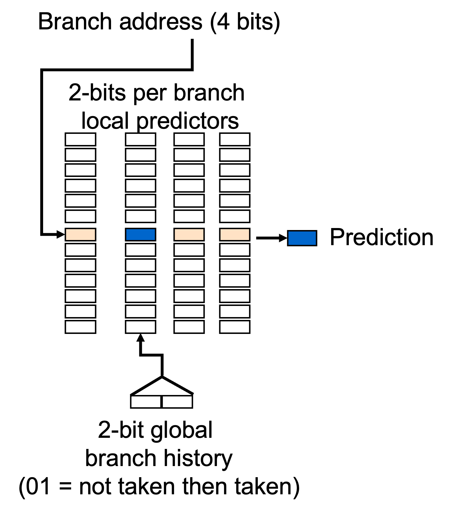
为了记录跳转历史，需要一个缓冲区
- 可以用 PC 的低几位作为索引
- (m,n) predictor
- m：参考最近的 m 条分支指令的历史
- n：每个分支预测器是 n 位的
- 例如 (2,2) predictor
- 参考最近的两条分支指令的历史，一共有 \(2^2=4\) 种状态
Example
(23-24 Final) Consider a Correlating Branches Prediction Buffer using (2,2) predictor with 4K entries. How many bits are needed to implement the predictor?
参考答案
Answer:
\(2^2 \times 2 \times 4K = 32K\) bits.
4. Tournament predictor / 饱和预测器
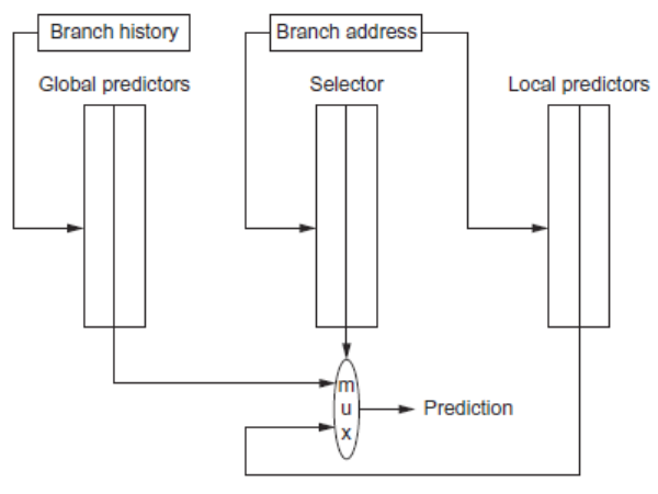
- 前一种相关预测器中，两条指令的 PC 后几位相同时有可能互相干扰
- 饱和预测器采用两个 predictors
- 一个是 global，另一个是 local
- 根据跳转地址来选择使用哪个 predictor
4*. Gshare predictor / Gshare 预测器
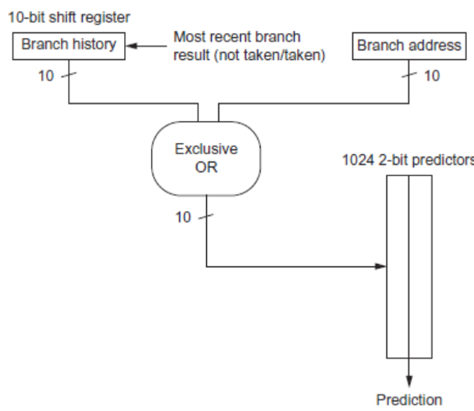
- 将最近的 m 条分支指令的历史与 PC 的低几位进行异或运算
- 根据这个结果进行选择，从 1024 个 2-bit predictors 中选择一个进行预测
- 免去了 1024 * 1024 个预测器的存储开销
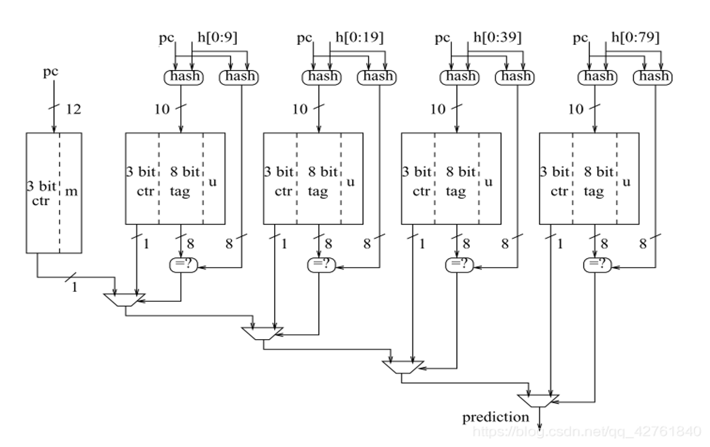
Prediction by Partial Matching (PPM)
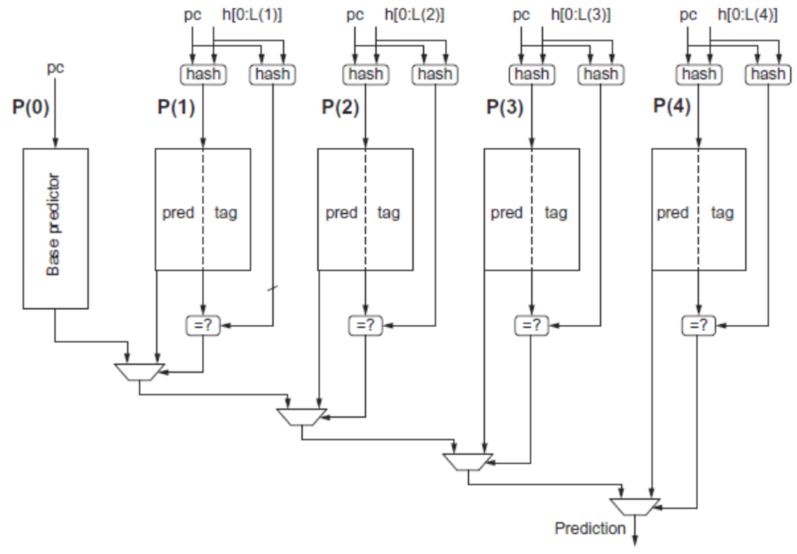
Tagged Hybrid Predictors / TAGE(TAgged GEometric history length branch prediction)
5. Branch Target Buffer (BTB) / 分支目标缓冲区
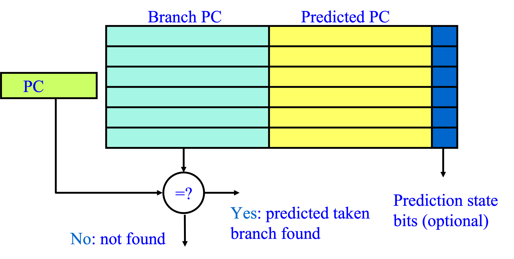
- 既然有可能会跳转，可以先把目标地址存起来
- 更甚，可以把目标地址的指令也存起来
- 跳转成功之后，直接取出即可
- 更甚，把 taken 和 not taken 的指令都存起来
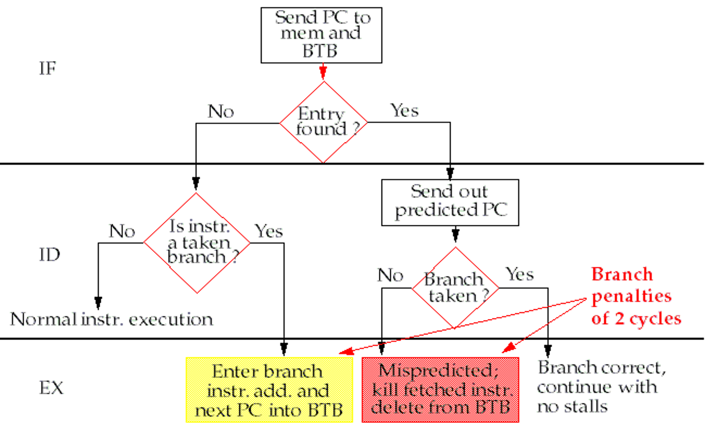
6. Integrated Instruction Fetch Units / 集成取指部件
- 配合刚才的 BTB，把转移预测器和取指部件集成在一起
- 转移的时候，把 taken 和 not taken 的指令都预取
- 对 memory 的带宽要求更高
7. Return Address Predictor / 返回地址预测器
- call 和 return 是另一种跳转的方式
- 把返回地址与 PC 结合起来
- 将 ra 存入一个小的 buffer，减少对堆栈的访问
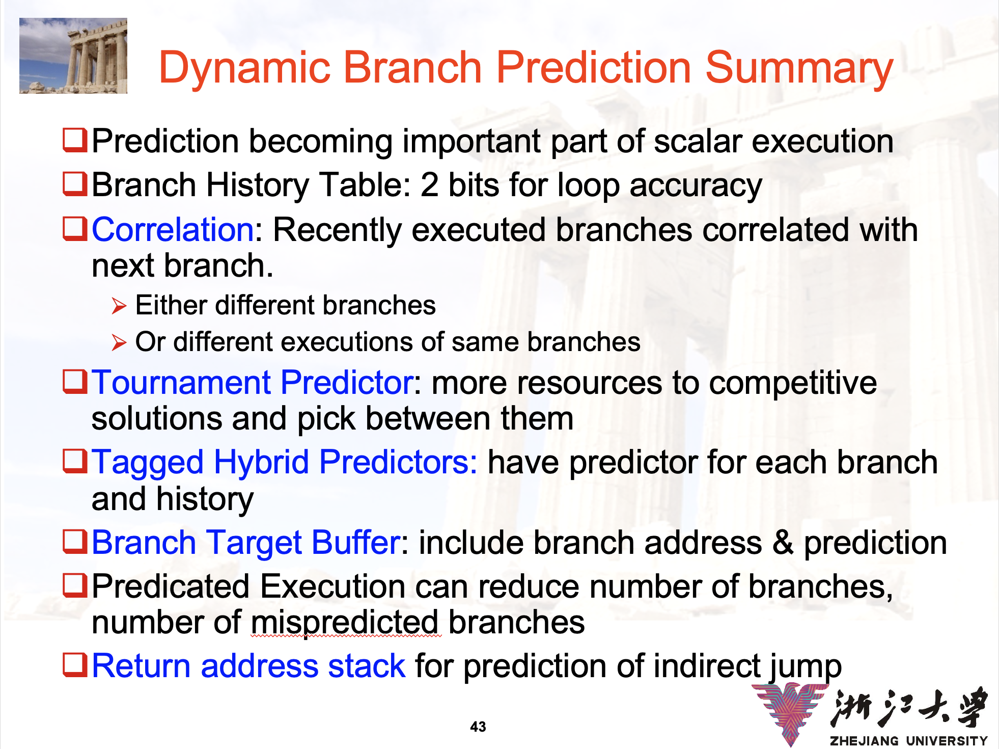
3. 猜测执行（Speculation）¶
3.1 Hardward-Based Speculation¶
- Tomasulo 能够实现一些跨越基本块的乱序执行
- 但是前提是在 issue 下一个基本块之前，分支结果已经确定
- 如果分支结果还没有确定，就需要猜测执行
- 假装分支结果已经确定，按照 predict 的结果执行
- 需要 handle 预测失误的情况，也即需要支持 rollback
- 如何支持？
3.2 Instruction Commit¶
- 为了支持 rollback，把程序分为【指令执行】+【指令提交】两个阶段
- 按照预测的方向执行程序，但是只 commit 能够确定正确的指令
- 所谓 commit 就是允许将结果写回到寄存器和内存中
- 联想数据库的【事务提交】
- 所以需要一个提交缓冲区，用来存储已经执行的指令
- 在 Tomasulo 中，这个东西叫做 ReOrder Buffer（ROB）
3.3 ROB in Tomasulo¶
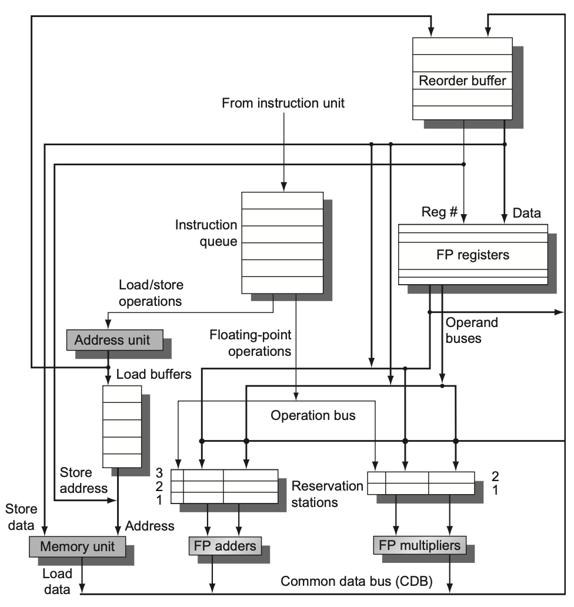
ROB 在 Tomasulo 中可以扮演保留站的角色，且不仅仅是如此。
- 作为循环 FIFO 队列来实现顺序提交
- 在指令【完成执行】和【提交】之间缓存结果
- 为普通指令和投机指令提供额外的寄存器作为操作数
- 也可以作为存储缓冲区，因此不需要原来的 store buffer 了
在这里，我们还是需要保留站来缓存操作数，唯一的区别是我们用 ROB 的编号来标记结果。
3.4 ROB in Tomasulo(cont.)¶
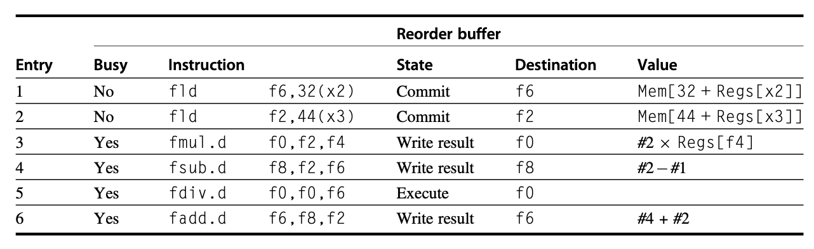
ROB 的一行通常包括：
- 指令类型
- destination register / memory address
- 结果值
- 是否完成
- 中断向量地址
3.5 Speculation in Tomasulo¶
指令执行分为以下阶段：
- Issue
- 保留站和 ROB 都 free 的时候，发射指令
- 预填相关信息
- Execute
- 执行指令
- 注意检查 RAW
- Write Result
- 将结果写入 CDB 和 ROB
- Commit
- 对 ROB 的头部指令，如果是普通指令
- 将结果写回到寄存器和内存
- 将这条指令从 ROB 中删除
- 如果是分支指令
- 正确，则当作普通指令 commit
- 错误，则清空 ROB 中的所有指令（也叫 flush）
- 对 ROB 的头部指令，如果是普通指令
想一想
指令提交是什么顺序？
通过以上的讨论，我们可以知道：
- 带预测执行 ROB 的 Tomasulo 是
- 顺序发射
- 乱序执行、乱序完成
- 顺序提交
- 进而实现了精确中断
Memory Disambiguation
如同寄存器一样，内存中的数据也可能发生 RAW 冲突。
例如：
在编译的时候，两个地址可能还不知道是否一样。所以在 load 的时候，要先比对一下 ROB 中的 store 相关的地址。
Example
(23-24 Final) 带投机的 Tomasulo，在 (1) 有空余情况下可以 Issue，Issue 后，可以从 (2) 读取 operand 值到 (3)。
A. Reservation Station
B. Reorder Buffer
C. Reservation Station and Reorder Buffer
D. Reservation Station or Reorder Buffer
A. Reorder Buffer
B. Register
C. Reorder Buffer and Register
D. Reorder Buffer or Register
A. Reservation Station
B. Function Unit
参考答案
Answer:
(1) C; (2) D; (3) A.
4. 小结：动态调度¶
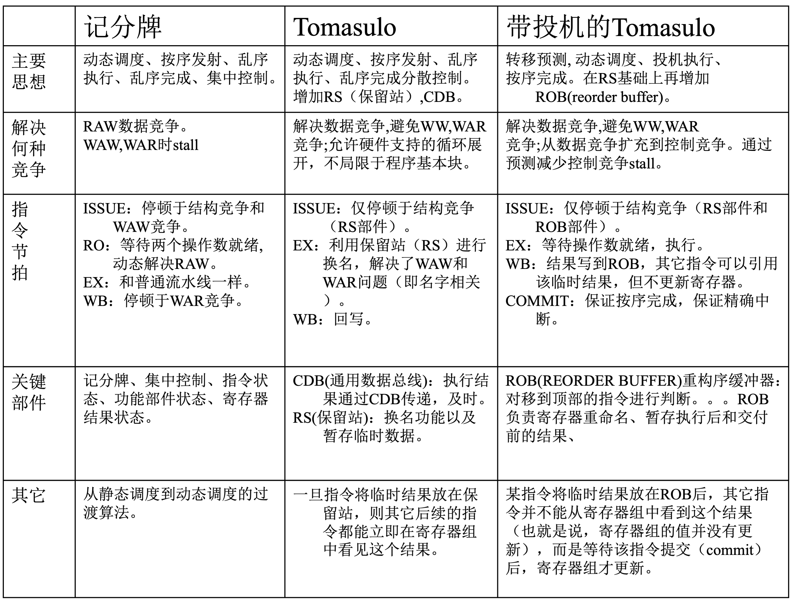